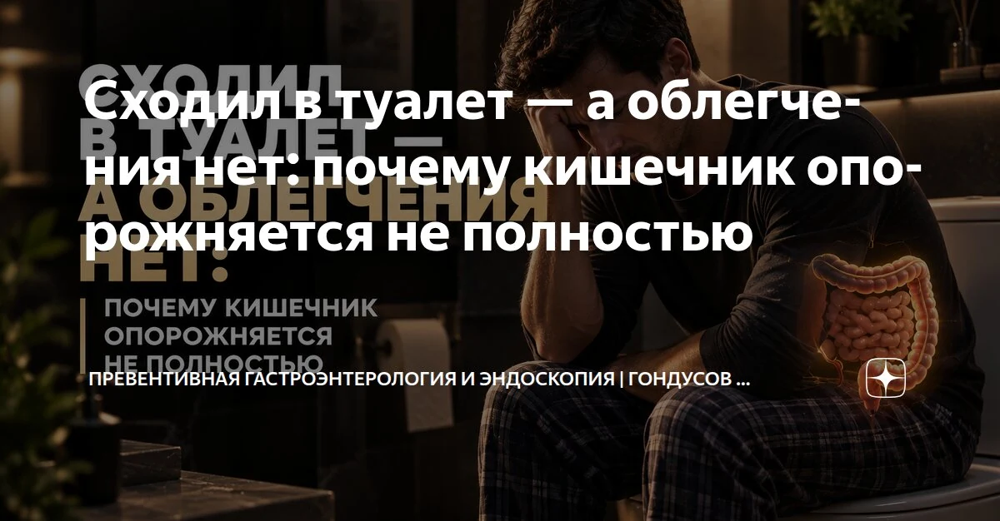

Сходил в туалет — а облегчения нет: почему кишечник опорожняется не полностью



Ты выходишь из туалета, но чувства облегчения нет: живот тяжёлый, будто внутри ещё что-то осталось. Это не «ленивый кишечник» — у неполного опорожнения бывают конкретные причины: мышцы, нервы и даже скрытая боль.
Многие в такой ситуации уверены, что нужно просто поесть чернослива или выпить стакан кефира на ночь. Кажется, что кишечник просто обленился. Но на самом деле у этого состояния есть вполне конкретные медицинские причины, и дело тут вовсе не в твоей «слабой» перистальтике. Давай разберёмся, где именно ломается этот механизм.
Когда мышцы работают невпопад
Опорожнение кишечника - командный процесс, похожий на слаженную работу оркестра. Когда ты идёшь в туалет, стенки кишки должны сократиться, чтобы протолкнуть содержимое, а мышцы тазового дна и анальный сфинктер - наоборот, синхронно расслабиться. Но иногда эта ювелирная координация даёт сбой.
Представь, что ты давишь на газ, забыв снять машину с ручника. Здесь происходит ровно то же самое. Ты тужишься, даёшь команду на выход, а сфинктер вместо расслабления рефлекторно сжимается. Возникает глухой блок. Получается борьба с собственным телом: часть стула выходит, а остаток застревает перед зажатыми мышцами, создавая то самое мучительное чувство незавершённости.
Нервы на пределе, а расплачивается живот
Синдром раздражённого кишечника (СРК) - наглядный пример того, как фоновый стресс бьёт по пищеварению. При СРК с преобладанием запора связь по оси «мозг - кишечник» сбоит. Кишка ведёт себя хаотично, её стенки то замирают, то сжимаются спазмами.
У меня был пациент, который каждое утро аккуратно ходил в туалет, но вставал с ощущением «проглоченного кирпича». Стало известно, что из-за хронического цейтнота на работе его кишечник находился в постоянном гипертонусе. Стул выходил мелкими сухими порциями, и спазмированная кишка физически не могла опорожниться за один раз.
Скрытый болевой барьер
Организм запрограммирован избегать боли любой ценой. Если в прямой кишке есть воспалённый геморроидальный узел или даже микроскопическая анальная трещина, дефекация причиняет дискомфорт. Острой рези может и не быть, но нервные окончания уже отправляют сигнал тревоги.
Мозг моментально реагирует: «Там повреждение, останавливайся!» Сфинктер спазмируется раньше времени. Организм пытается защитить ткани от перерастяжения, но платой за эту защиту становится неполный стул и постоянная распирающая тяжесть.
Как найти корень проблемы
Если базовые методы не помогают, гадать бессмысленно - нужно обследование:
– Аноректальная манометрия: датчик измеряет давление и показывает, правильно ли расслабляются мышцы тазового дна.
– Дефекография: рентген или МРТ в реальном времени показывают анатомию прямой кишки при опорожнении.
– Колоноскопия: помогает убедиться, что путь свободен и внутри нет полипов или воспаления.
Чем помочь себе
Перестань тужиться до искр из глаз - потуги травмируют сосуды и только усугубляют геморрой. Не засиживайся на унитазе дольше пяти минут: нет результата - вставай и уходи. Наладь питьевой режим и добавь клетчатку, чтобы смягчить стул.
И помни: если чувство неполного опорожнения повторяется регулярно - это не норма. Не надо терпеть годами, лучше дойти до врача и выяснить точную причину.
Ваш доктор Гондусов Д.В. 

Статья носит информационный характер и не заменяет консультацию врача. Не занимайтесь самодиагностикой.